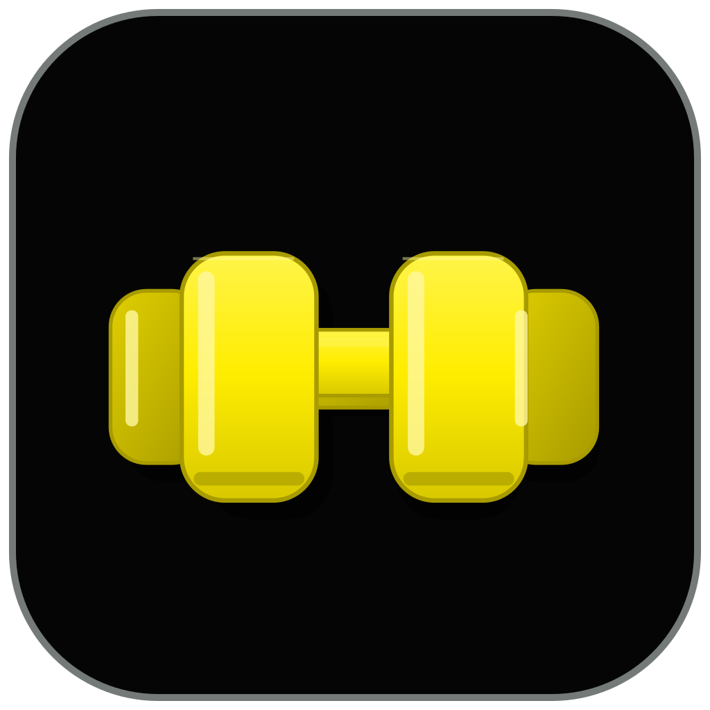
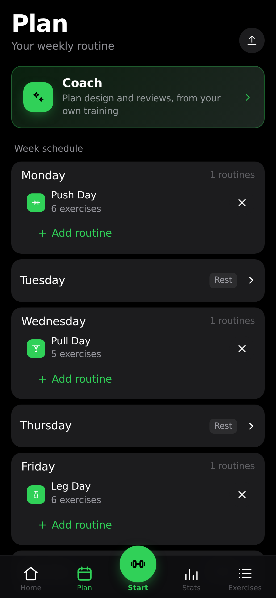
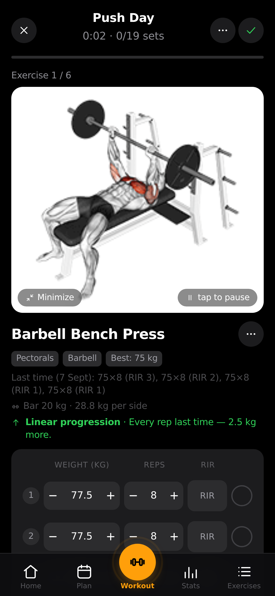
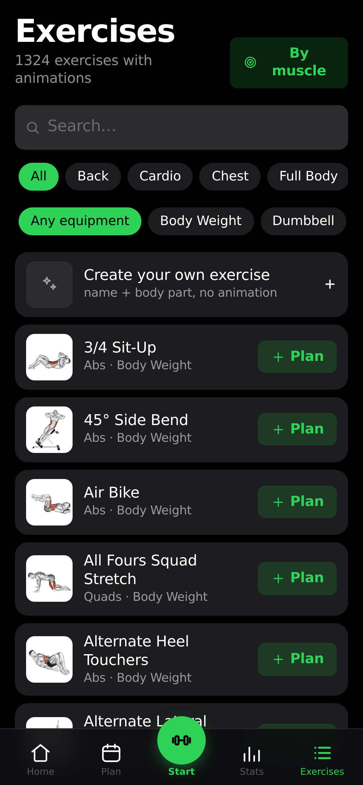
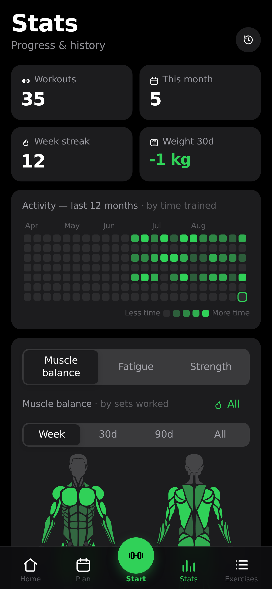
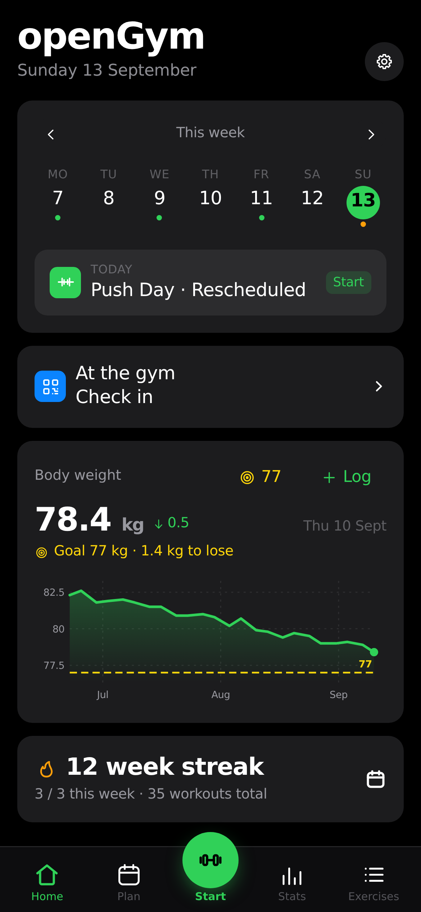

Build routines and schedule your training week.
01 / BARBELL
YOUR WORKOUT
TRACKER.
Track every set. Know your progress. Train with an optional AI Coach. Keep your training data in your hands.
GET THE SOURCE ↗Open source · Self-hosted · Local mobile mode

02 / THIS IS BARBELL
A PERSONAL
TRAINING SYSTEM.
Plan, train, track, progress. The existing product works in your browser or in its Capacitor mobile shells.
Follow targets, log sets, and use rest timers.
Review history, strength trends and bodyweight.
03 / PLAN
PLAN THE
WEEK.
Put routines on the days you train. Adjust your plan when life changes.

04 / TRAIN
TRAIN WITH
INTENT.
Keep exercise targets, working sets, effort and rest in reach during a workout.

05 / TRACK
EVERY SET COUNTS.
Log weight, reps, RIR or RPE, timed work and bodyweight. Your session history stays portable.
06 / PROGRESS
KNOW YOUR NUMBERS.
See estimated 1RM, activity, training volume and muscle balance from logged workouts.
07 / AI COACH
TRAINING INTELLIGENCE.
Configure the optional Coach on your device or server. Review its training proposals before applying them.
How the Coach works ↗08 / EXERCISES
FIND YOUR
NEXT MOVE.
Search the exercise library, filter by equipment and save favourites. Exercise animations are sourced separately; see the media notice.

09 / STATS
SEE THE
WORK ADD UP.
Review activity, personal records, bodyweight and training trends.

10 / YOUR DATA
YOUR TRAINING.
YOUR RULES.
Use local mobile storage or self-host with passkeys, profiles, sync, backups and exports.
11 / OPEN SOURCE
BUILT ON AN OPEN FOUNDATION.
Barbell builds on openGym and retains its Git history, GNU AGPL license, upstream attribution and third-party media notice. The current source lives in the Barbell repository.
12 / REAL PRODUCT
THE WORKOUT,
IN YOUR HAND.
These are screenshots of the existing product before the Barbell visual migration; the live UI is being updated.

13 / START
TRACK YOUR WORK.
Build and run Barbell from source. Mobile distribution and store releases are still under review.
SELF-HOST BARBELL ↗